PromiseHub · Video 76
Manage people
Every account in one directory, roles checked on the server, and deactivation that deletes nothing
Every account in one directory, roles checked on the server, and deactivation that deletes nothing
The directory, a filter and a search.

GET /people · 25 to a page · removed accounts not listed · L2-112
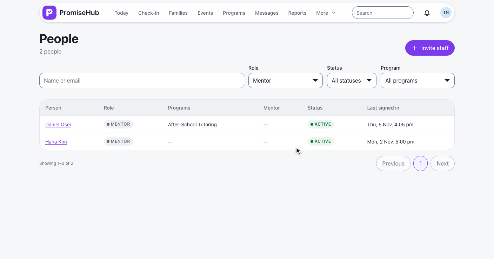
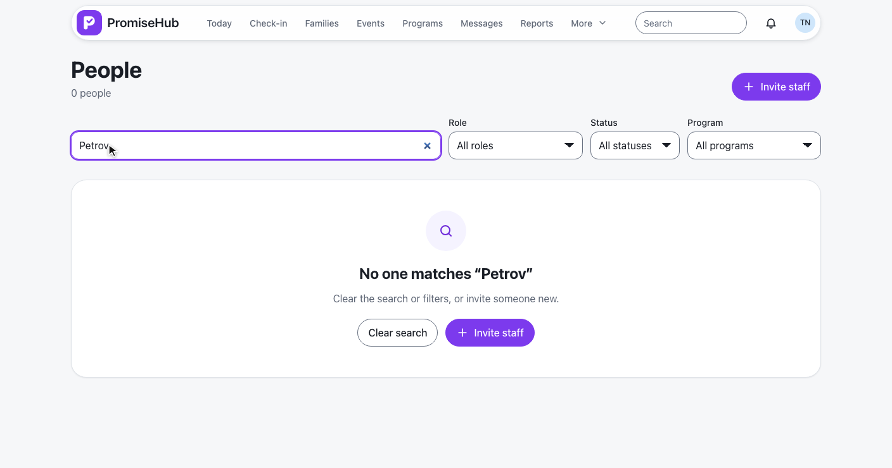
q, role, status, programId, page · an unknown role or status answers 422
The record and Change role.
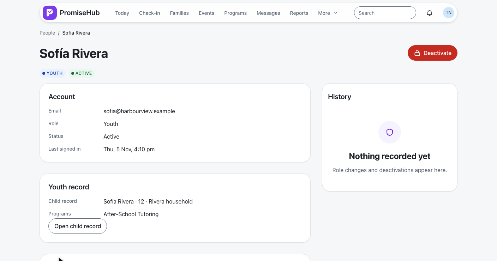
GET /people/{id} · mentoring and learning only while their module is on · L2-113
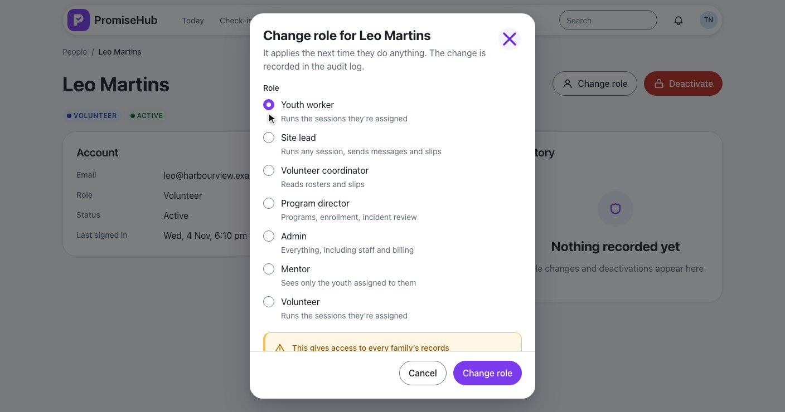
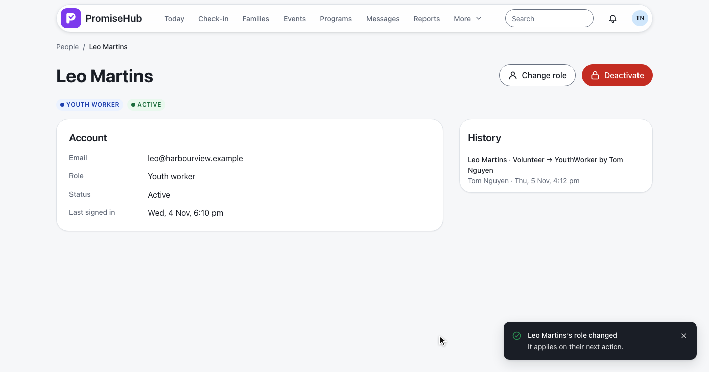
PUT /staff/{id}/role · never Youth · Mentor only while Mentoring is on · audited before and after
Nothing deleted.
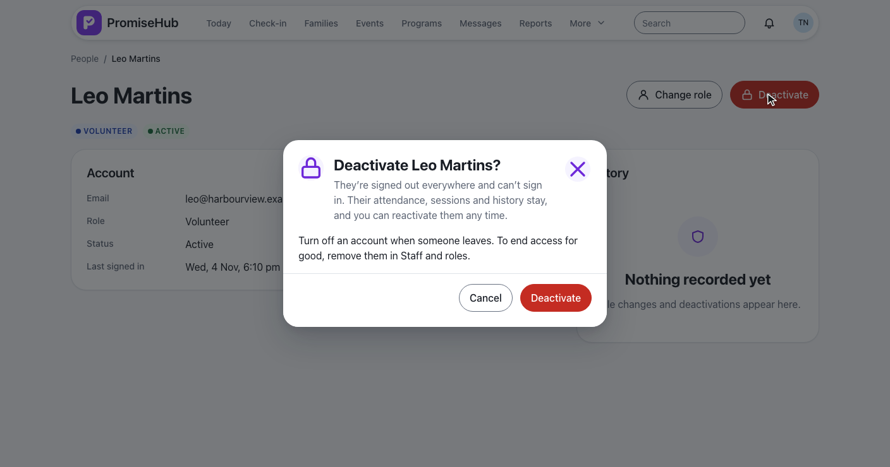
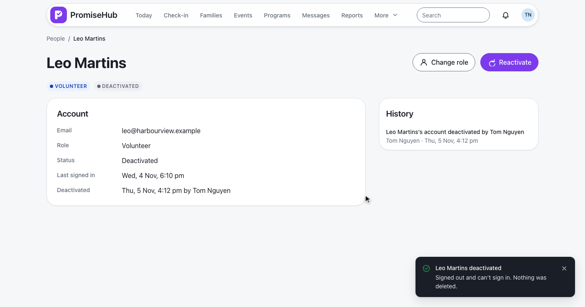
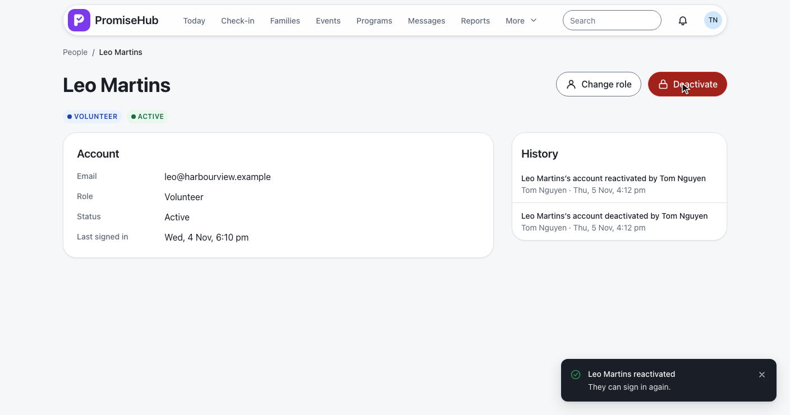
POST /people/{id}/deactivate and /reactivate · next request 401 account-deactivated · ADR 0070
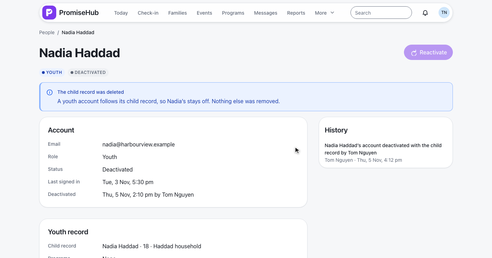
Deleting a household deactivates its youth accounts · reactivating answers 422
The directory and a record.
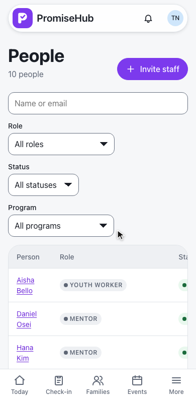
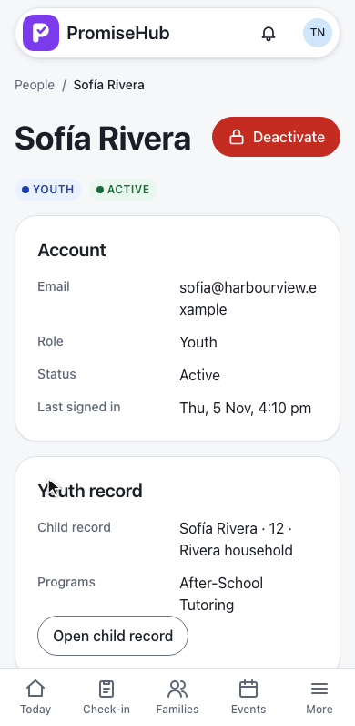
Mentoring off, only you, failed, forbidden.
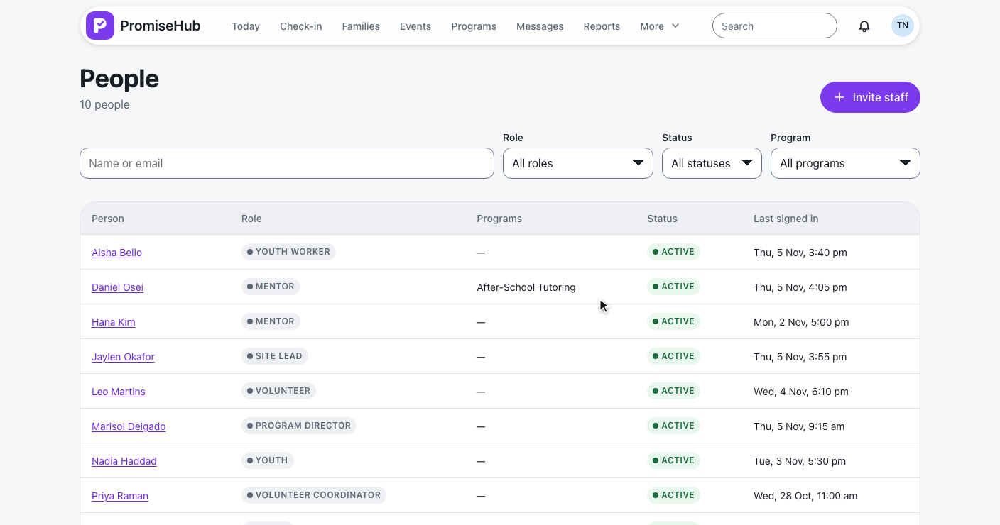
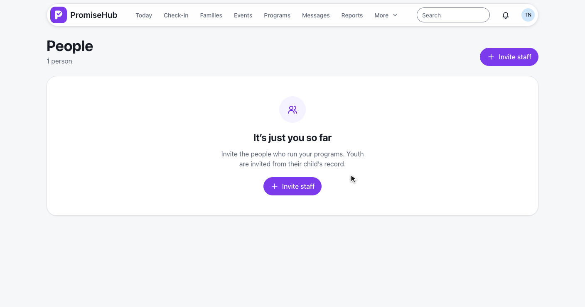
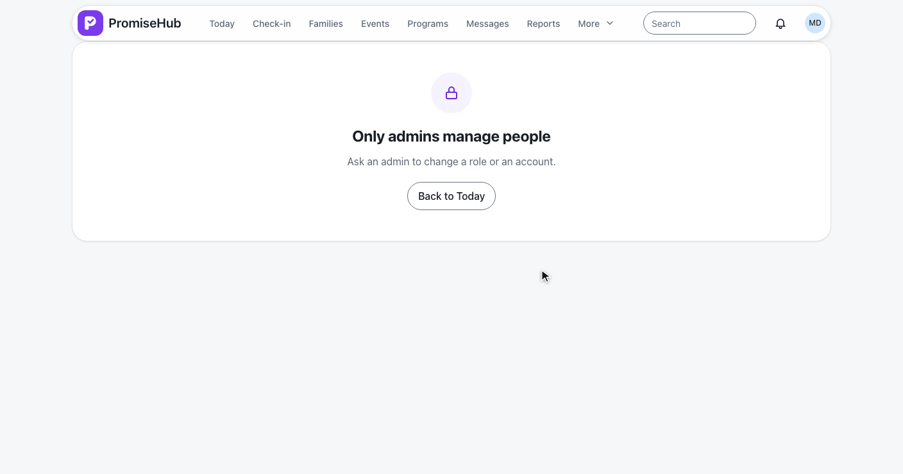
No mentoring field while Mentoring is off · a failed load offers Try again (in the clip) · 403 for other roles
PeopleDirectoryTests and PersonRecordTests: filters, pages, module fields, tenancyPersonRoleChangeTests: the role rules and the auditAccountLifecycleTests and DeactivatedSignInTests: sessions, sign-in, the child recordpeople and person specs with axe, on a laptop and a phone
Next: reset a password